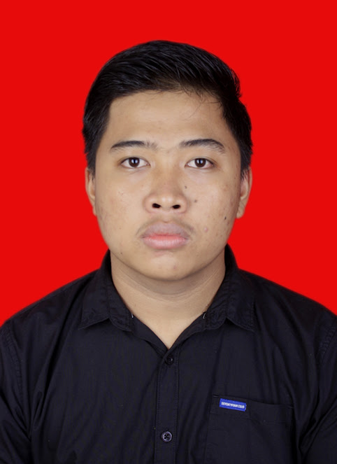

Staff Admin
Unsika Karawang, jawa barat
Kualifikasi
- Pendidikan minimal D3
- Berpengalaman dalam menggunakan OSS dan web PU menjadi nilai tambah
- Menguasi Ms Office (Word, Excel, PPT), Photoshop ataupun aplikasi design lainnya dengan baik
- Mampu bekerja dengan teliti, rapi dan berinisiatif tinggi
Deskripsi Pekerjaan
- Menyiapkan dokumen administrasi tender sesuai persyaratan yang ditentukan
- Pengarsipan dokumen kontrak/Adendum proyek
- Berkoordinasi dengan tim proyek di lapangan dan pihak terkait lainnya
Persyaratan
- Surat Lamaran Kerja
- Biodata Pribadi
- SKCK
- Portofolio
Biodata Saya
| Nama | : Ari Rizwan |
| Tempat, Tanggal Lahir | : Karawang, 23 Juni 2003 |
| Jenis Kelamin | : Laki-Laki |
| Alamat | : Rengasdengklok, Kab. Karawang, Jawa Barat |
| : Aririzwan0@gmail.com | |
| Nomor Telepon | : 081319076950 |